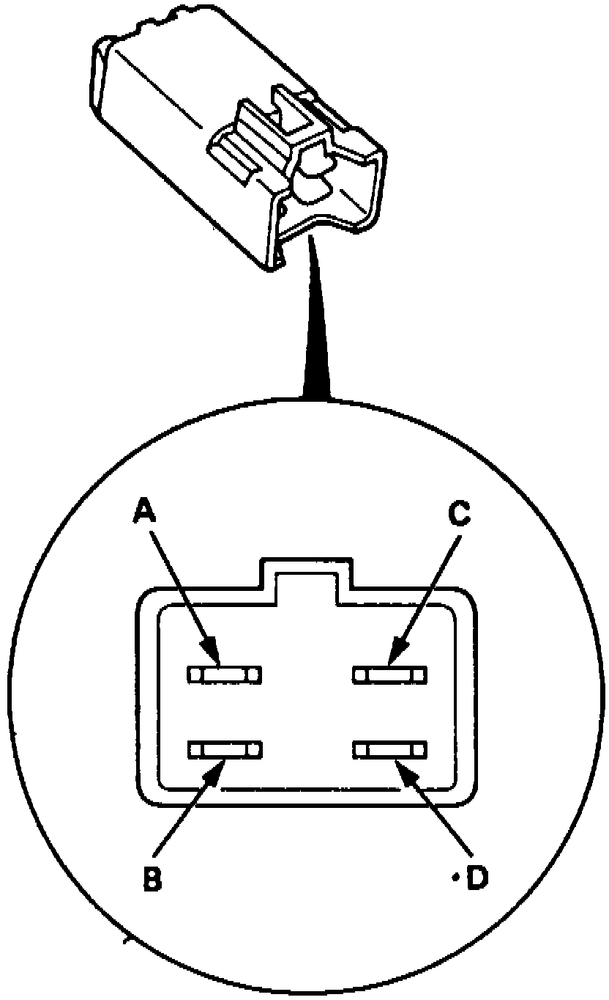

Radiator Cooling Fan Motor Relay: Testing and Inspection
Fig. 25 Relay Terminal Identification:

1. Ensure no continuity exists between relay terminals A and B, Fig. 25.
2. Connect 12 volts across terminals C and D, continuity should now exist between terminals A and B.
3. If relay does not operate as specified, replace relay.